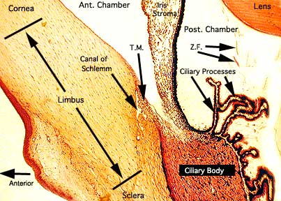
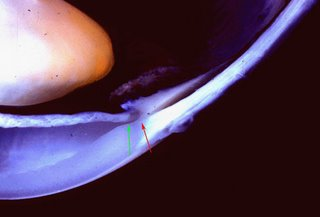

Limbus
* Định nghĩa:
+ Vùng rìa

+ Vùng rìa là một vùng chuyển tiếp của giác mạc và cũng mạc, do cả hai phần này tạo nên. Vùng chuyển tiếp bắt đầu ở một đường (mũi tên màu xanh) được xác định bằng màng Bowman và Descemet. Kết thúc ở đường (mũi tên đỏ) được định bằng cựa củng mạc vẽ vuông góc với bề mặt nhãn cầu. Vùng rìa ước tính rộng khoản 1,5mm. Vùng rìa giải phẫu đã được nói đến nhiều ở các sách có mốc rõ ràng là màng Bowman. Khi màng này không thực sự được nhìn rõ trên đèn khe thì vùng rìa được xem tương ứng với vùng màu xanh phủ lên phần giác mạc và kéo dài đến cựa củng mạc. Vùng rìa là một mốc giải phẫu quan trọng cho phẫu thuật lấy thể thủy tinh, bọng thấm trong glaucoma...Bởi vì hệ thống bè bao quanh vùng này, vùng rìa cũng liên quan mật thiết với điều trị glaucoma bằng laser.